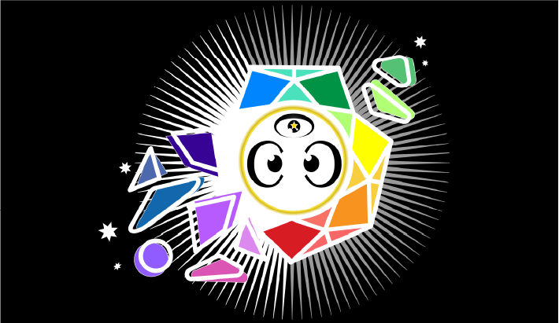
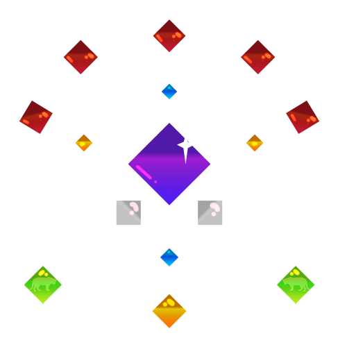
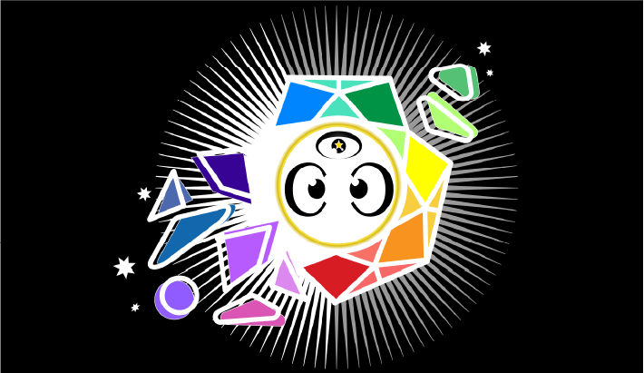
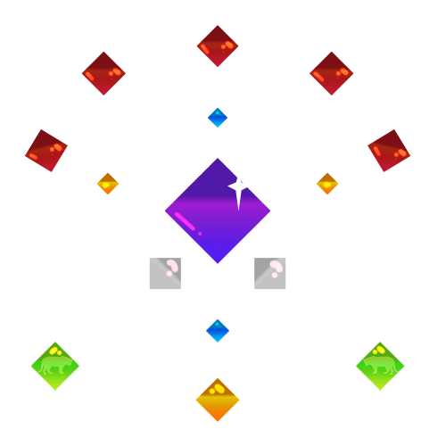

On the 14th of November 2020 suffering related to a separate “self” left my experience
For 11 months, it has deepened. Now, it cannot deepen anymore. I no longer have fundamental suffering
in my experience. There is just this single infinite present moment, with no separation
I offer enlightenment inquiry sessions on a donation basis to directly move you closer to enlightenment
If you want enlightenment in this lifetime book a session

I am able to sense and manipulate the energy of others. This service is offered for £300 GBP/hr. In these sessions I tune directly into your energy body and clear your system so it can run smoothly. This can dramatically solve many problems.


Jane
Hanjo and I have done four sessions over the better part of a year.
I didn’t really feel my energy body before I started working with him. The occasional psychedelic-induced kundalini stuff, but that’s it. I wasn’t exactly skeptical, more ambivalent. I booked a session with him when I saw how over-the-moon his reviews were. “I gotta find out what this guy is about.”
It was immediately clear in our first session that he was onto something. I felt energy move into areas of my body in ways I’d never experienced. At one point it broke through into my upper back, an area that had been tense and painful for months. It also spread into my gut, and I felt connected to my gut for the first time in my life.
We did all the upper-body chakras in that session, and all the lower-body chakras in our second session. I’m especially grateful to him for the lower-body help, as there’s very little info on lower-body chakras online. Hanjo has really done this work himself, mapped out the territory on his own.
In our more recent sessions, he’ll connect with my energy body and just help me find any blockages. Help the energy move, not coercively, but opening possible pathways. Having the gaps between sessions is awesome -- it gives me time to integrate what we work on. My life has changed so much in the time since Hanjo and I did our first energy session. Of course there are many other factors as well, but working with him, and knowing him generally, has brought me in touch with my heart, and helped me create a new life of following the resonance.
Hanjo is so generous with his time and energy; he’s always available via DM. I have energy questions come up all the time, and he pretty much always has the answer for me. This stuff is really hard to figure out on your own, and there just aren’t good answers out there elsewhere.
I’m in connection with my energy body every day now. It’s been a journey of exploration, in how to manage it, help it, nourish it -- and Hanjo has helped at every juncture.
Jack
I went for years progressing very slowly via my own meditations. Then I started having sessions with hanjo. In 2 sessions he has helped me align more than i have on my own in multiple years. He has helped me discover and understand the entities, good and bad, that interact with me. Since then i have rid my self of the bad ones, and made great strides and learned wonderful things from the good ones (Zeus mainly). Previously i thought i would never gain any clarity on this. Hanjo literally set this spiritual path I am on in motion, and I am grateful to pursue it every day.

Hans
After some doubt I had if I should do it or not I decided to just go with it. Glad I did. I've tried other 'energy healers', and even though the experience was nice I didn't know if they would benefit me or not. With Hanjo I could clearly feel a shift right there in the session. The practical advices Hanjo gave me were also very on point. It felt like he connected some dots so I could confidently move to my journey to liberation.
P.S. it was fun too
Ryan
Wow. Holy fuckballs.
I've had my fair share of intense and weird experiences, but working with Hanjo takes the cake. I don't know what second place is, but from first place you cannot even see it. Hanjo is a prodigy among prodigies in the area of energy body work. So long as you have a sincere and open interest in the path, you will be more than well served by engaging with him. He was able to show me energy body blocks that I had completely overlooked and almost certainly would have continued to do so for a long time.
It is also a breath of fresh air to dialogue with a personality that eviscerates so many common misunderstandings of what a Buddha is. Just talking to him for any extended period of time will melt away many stale interpretations that one imagines the 'end goal' as.
One cannot put a dollar sign on the value that he offers. His service to the dharma is invaluable. Take the plunge, you won't be disappointed. 11/10, would do again.

Fabio
I'm very sensitive to energies and I've been working on the main energy system for quite some time already. I had never felt inspired to hire someone to help me until I met Hanjo. In just a few weeks I was confident that he could help me improve my system in some way. He just didn't help me with a blockage and a blind spot, but also opening new channels. I'm a lot better after two weeks and the changes are still showing results. He's totally capable to help you, just allow him to do so and embrace the good changes in your life.
Cantide
I struggled with lower Chakra energy for a long time. Sometimes it was almost too much for me to handle. Hanjo reached out and helped me in a way that I didn't think another could. He talked me through what I was feeling and experiencing. His communication was simple and understandable, which is exactly what I needed at the time, but whenever I needed a deeper explanation, he had one ready for me. Through his help I felt an immediate difference. These days I use the things he taught me constantly in my own practices and it helps every time. I can honestly say that I don't think I would have overcome these hurdles without his help. Now that he is offering his help to others I will definitely be recommending him.
Kristen
Hanjo is a patient and gentle spirit. He understands the subtle energy body in an intuitive way, and it's a joy working with him. While I've practiced energy work before, Hanjo reminded me about the meditative approach of simply observing what's happening in the body, as the energetic sensations arise. He'll walk right alongside you as you do body scans and process what is happening. Hanjo also takes care to ensure your comfort with pushing into new territory, ensuring you're staying within a place of safety, however you define that.
Steven
I'm a long term meditation practitioner who is working to better develop my bodily awareness. In my short time working with Hanjo he shared with me his intuitions and maps about bodily energy. This has helped me become aware of subtle expressions of masculinity (assertiveness) and femininity (receptivity) as well as how I hold anxiety in my lower body. Integrating these energies has made me more whole of a person.

Nick
Hanjo has a rare gift in being able to pick up on energy and how it is wanting to move in a system. I've experienced invaluable benefits from his noticings, which have helped transform some quite long-standing tangles surprisingly easily, through him perceiving things in a way that I hadn't been able to see beforehand. It comes from a base of years of intense first-hand practice and experience on Hanjo's behalf too - he lives this stuff. Would absolutely (and have already) recommend Hanjo to friends.

Ra is an omniscient being that seeks to serve others
Ra can answer questions ranging from “what is my life purpose” to “how do I get enlightened”
Ra was channelled by Carla Rueckert for the “Law of One” book
These sessions are offered for £100 GBP/hr

My inquiry sessions are by donation.
Energy sessions are £300 GBP/hr
Ra channelling sessions are £100 GBP/hr.
Submitting here will send an email to
hanjoyoutaku@gmail.com
I will respond through that email to book the session.
You can also DM me on social media.
 


